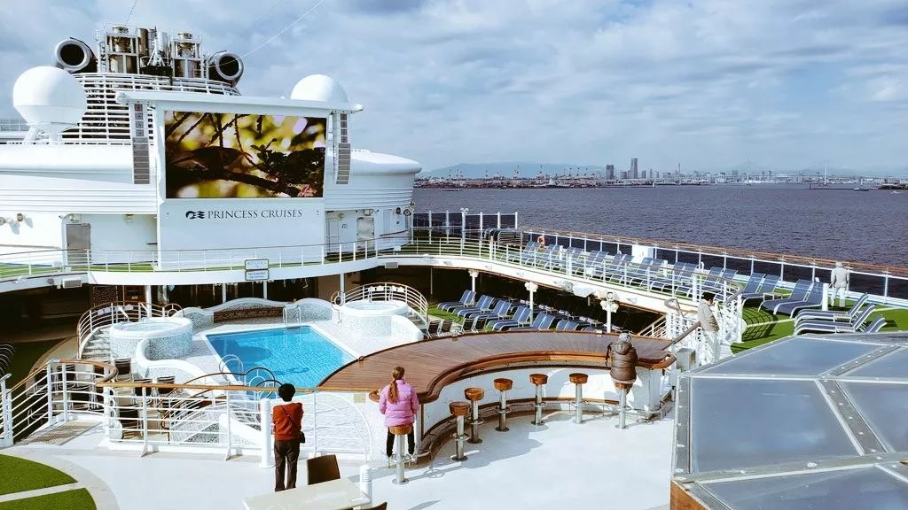
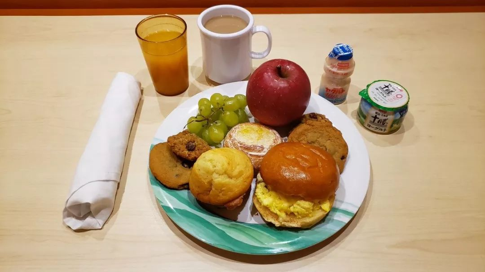
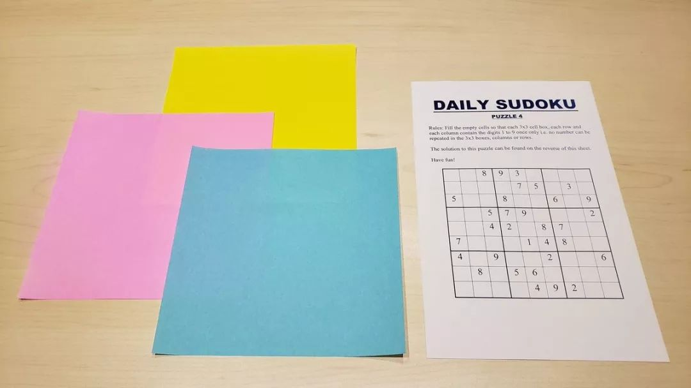
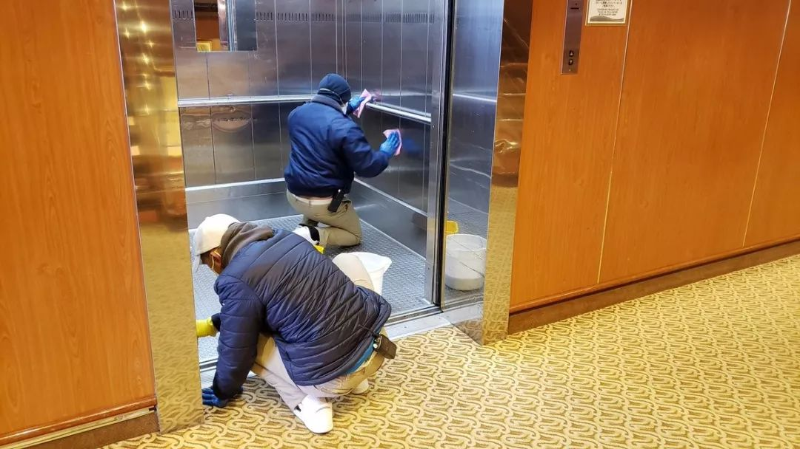

追踪钻石公主号：邮轮上有两名内地乘客，一人已确诊
原文链接 备份链接 _ 一名香港游客感染了新冠肺炎病毒，使得这艘邮轮的“春节之旅”演变为一场全球直播的公共卫生事件 _ 文 |《财经》记者 杨立赟 余乐 编辑 | 余乐 最近一周以来，停靠在日本横滨港的“钻石公主号”邮轮成为了全球关注的 …

「钻石公主号」邮轮的离岸隔离进行到第九天，已经有174人确认感染新冠肺炎，超过了日本本土的确诊感染总数，且还在增加。一个突然来袭的新型病毒，一场突然降临的隔离，一艘无法靠岸的船。「钻石公主号」像个隐喻，它暴露了看似平滑运行的现代社会系统的脆弱。
文｜****赖祐萱
编辑｜****槐杨
封面｜****REUTERS
靠不了岸
船即将靠岸，高桥想。下船之后要去吃麦当劳、烤肉和牛肉盖浇饭。自从2020年1月20日在横滨港登上「钻石公主号」，他已经在海上漂了12天。这是2月1日，从日本九州鹿儿岛，经停香港、越南岘港、台湾基隆港、日本冲绳，两天后，他将抵达出发地横滨港。出生30多年，第一次参加豪华邮轮旅行，更准确地说，这是他人生第一次坐邮轮出海。他很兴奋，每到一处景点，都下船参加了在地的观光活动。2月1日那天，邮轮在冲绳首府那霸市入港，他和船上其他乘客一起，在这里进行了一日观光游。当时，他并不知道这是未来一个月内最后一次下船。他玩得很愉快，虽然，和他同行的乘客，大部分都是看起来已经退休的老年人。
这天深夜，日本厚生劳动省宣布，邮轮上一名80岁香港乘客被确诊为新型冠状病毒感染者，7天前，他已经下船，但船上的人有感染的可能。
2月3日晚上8点，「钻石公主号」全力航行两天后，比计划时间提前10小时到达横滨港。3711人本该下船，但是，高桥，还有船上所有人，都听到了广播：船不能靠岸，所有人要留在船上，接受厚生劳动省的检疫。与香港感染者密切接触的200多人将会首先接受检疫。
高桥立刻在推特上发布了这条消息：「钻石公主号」邮轮即将被隔离，在自己的名字旁，他又标记上了「On board the Diamond Princess」。未来的一周，他发布了超过1500条推文，成为社交媒体上这艘邮轮信息最活跃的提供者之一。
「钻石公主号」由日本制造，从日本始发，是美国嘉年华邮轮集团旗下的著名品牌「公主邮轮」中最大的邮轮之一。这次航行，它承载了2666名乘客和1045名船员，乘客中将近一半来自日本，其次是美国和加拿大。据中国驻日本大使馆的调查，船上的中国乘客有287名，包括2名大陆乘客、260名香港乘客、20名台湾乘客和5名澳门乘客，另有20名中国船员。
船不能靠岸。尽管那位香港老人被感染的新闻已经在世界范围内蔓延，邮轮上，乘客们继续着闲适的心情，相信这种新出现的病毒与自己无关。3号下午，航行的末尾，高桥看到，有人在大厅玩游戏，有人在泳池旁的休息区打扑克、打麻将，餐厅的黄色暖光中，围坐在一起吃饭的人并没有减少，晚上8点多的表演秀，照样有人涌到现场。几乎没有人戴口罩。

钻石公主号邮轮 图源daxa_tw
晚上11点，船长广播，所有乘客都必须待在房间，检疫官上船。闲适的气氛就此消失。第二天，检验结果出来，船上有10名确诊感染者。又一次广播，从2月5日计算，14天的隔离正式开始。
7 X 24小时
最初，那种感觉算不上过分糟糕，只是有点无所事事。
「钻石公主号」邮轮的客房分为7种类型，大的有40㎡-80㎡，拥有独立阳台，小的只有14㎡。海景舱没有阳台，只有一扇小窗，可以看到外面的大海。内舱更小，没有阳台也没有窗户，却要容纳下3、4个乘客。高桥就住在内舱的最小房型里，每天做的事情，就是发推特，发推特。在封闭的小空间，24小时被无限拉长，晚上，他睡不着，恍惚中经常以为自己听到了来自甲板或是隔壁房间的咳嗽声。
一日三餐是乘客们仅有的能与人交流的时刻。每天，船员们先是敲门送来一张菜单，从前菜到主食，再到甜点，一周来几乎没有重样。乘客可以点菜，日式、西式、中式料理几乎都能满足。开饭时刻，船员再次敲门，送上饭菜，荤素搭配均衡，还有水果和饮料。乘客可以借机打开门，和船员说一声「谢谢」。

船舱内的伙食图源daxa_tw
但也就是这些。邮轮禁止船员和乘客有更多的接触和交流。2月5日开始，船上的所有娱乐设施，泳池、赌场、温泉、影院、歌舞秀、按摩，都关闭了，乘客们所有打发时间的活动，都只能在房间里。
帮助乘客杀时间，邮轮也想了很多办法。隔离后，网络开始免费提供，速度时快时慢。8个电视频道，60部电影，24小时随便观看，只不过大多数影片都是英语字幕，而乘客大多来自非英语国家。一些中年女性会选择看电视中的太极拳视频。每天，邮轮还给乘客发彩色的折纸和数独题卡，日本乘客更喜欢这两种游戏，有人因为某天只送来了数独题、落下了折纸，在社交媒体上发表不满。

邮轮给乘客发的数独卡图源daxa_tw
隔离的时间还是显得太漫长了。
大卫·阿贝尔74岁，来自英国，这次登船旅行，是为了庆祝和妻子的50周年金婚。他每天都在Facebook上开一会儿直播，通报这艘船的隔离生活。电视报道中，他发现一位英国乘客已经确诊感染上新冠肺炎，而他曾和确诊者同桌吃饭。自然有点担忧，但对着直播镜头，他富于教养地说，那位确诊乘客正在和新婚妻子蜜月旅行，「我想她一定非常的难过。」直播里，他还展示了自己的房间，拥有海景阳台的套房。除了直播，他能做的就是在阳台上创作，举起相机，拍下海鸥、波光粼粼上的夕阳，还有远处抵达不了的港口。
陈日昇是一位魔术师，来自中国台湾地区，从越南上了这艘船。本来是开心的，他受邀而来，开始自己2020年第一场邮轮表演。然后，隔离开始了。他住在没有阳台、只有窗户的房间，只能望见一小片大海。他也开了直播，说，在船上的日子并不好受。他还说，病毒不会分贫穷贵贱身份地位，会生病，就是会生病。
比无聊更沉重的情绪在蔓延，有人在社交媒体上说，「这就是个高级监狱」。一艘世界顶级的豪华邮轮，陷入了7X24小时的沉默。正如高桥所见到的，船上乘客大部分是老人，其中有相当部分不使用智能手机。隔离发生时，他们对外界所知不多。但电视新闻中，船上的确诊人数一天天在增多。10人，41人，65人……漂在海上，无法靠岸，恐慌和焦躁，随着时间逐渐积淀。
高桥还是每天发推特。他说，船长广播越来越频繁了，隔离第一天，广播八次，最近，已经达到了每天十数次。「比起感染者们传递出来的恐慌，更严重的是无尽地待在屋子里的混乱感。」他同意接受《人物》的采访，但记者发去的问题，他过了三天才回复。在那个小小的、不透风的房间，他睡觉、吃饭、发推特，等待来自岸上的检疫官一批批对乘客检测。
像高桥这样住在内舱的乘客，邮轮允许他们每天到甲板上透气一小时。那一小时中，高桥会遇到别的乘客，但谁跟谁也不说话，他们谨慎地保持距离，「唯一想做的事情就是，一边走，一边大口呼吸着空气。」他对《人物》说。

钻石公主号邮轮图源daxa_tw
崩溃的系统
另外一些人，面临比高桥严重得多的问题。
药不够了。你知道的，乘客中大部分是老人。很多人有基础病，但随身带的药只准备到2月4日，预计到港下船的那一天。突然宣布的隔离打乱了所有人的计划，糖尿病、高血压、白内障患者开始出现停药带来的身体问题，到2月9日，已经有100多位乘客表明自己身体不适，出于跟新冠肺炎无关的疾病。一些人被紧急送医。
据《读卖新闻》报道，「钻石公主号」2666名乘客中，60岁以上老年人有2144人，占比高达80%。高桥也告诉《人物》，很多老人尤其是日本的老年人，不会使用最简单的翻盖手机，更不要说能够获取外部资讯的智能手机。日本乘客和他们的家属把希望寄托于厚生劳动省，家属们不断地给厚生省打电话求助，厚生劳动省发布了药物申请书，按照对外说法，乘客填写好信息，就可以获得药物。但是，实践起来并没有那么快。即便填了药物申请书，隔离的5天后只有500人收到了紧急药物。愤怒在增长，2月9日，在推特搜索关键词「厚生劳动省」，后面跟着的第一个关键词是「无能」，其次是冠状病毒。
中国驻日使馆送去了一些药物，收到了一封来自中国香港乘客的感谢信。其他来自日本之外国家和地区的乘客还在努力找药。推特上每天都能找到大量的药物求助信息，大部分的求助来自乘客们的家人，他们通常是年轻人，为自己的父母、爷爷奶奶、叔叔阿姨求助。美国佛罗里达州女孩Ashley每天都在询问各国网友，如何帮助她在船上的父母获得药。她想过求助于美国政府，写了邮件，但没有回复。2月9日东京时间凌晨4点，她对《人物》记者说，「我已经几个小时没有联系上我的父母了，也许他们已经睡着了。关于如何获取药物没有更多信息，如果你知道什么请一定告诉我。」
人们习惯了在现代社会系统中平滑地运转，但一个忽然出现的新病毒，一次突然降临的隔离，暴露了这一系统的脆弱。一位日本老太太举着一面日本国旗向岸边的人示意，旗子上写着「药物不足」。岸上的人在白纸上写下「什么药」，对着她展开。物资调配和民众的需求，在这一刻回归了最原始的沟通。

邮轮上的乘客拿着写有「药物不足」的日本国旗 图源daxa_tw
对很多老人来说，船长广播通知成了获取信息的唯一渠道。高桥每天在推特上同步船长广播的音频。根据邮轮公司官网发布的信息，这艘邮轮上有来自世界56个国家和地区的乘客，船长广播却只有英语和日语两种语言。高桥觉得，这对船上很多来自非英国地区的乘客很不友好，他曾在推特上求助，希望有人帮他把广播内容翻译成中文。还有一位日本男乘客说，每次听广播，都感觉自己在进行英语托业听力考试，非常紧张。
空间的密闭和信息的停滞，让很多乘客到达了崩溃的边缘。2月11日，一位日本乘客向日本政府提交了手写信，提出船上乘客的困境：床单一周未换，生活环境需要改善；需要医疗援助；信息不足；邮轮服务台对乘客需求置之不理；老人、有过往病史者没有得到良好照顾；希望日本政府开设一个乘客需求电话热线。而异国乘客的表达就没有那么克制了，一对美国夫妇接受美国媒体采访时呼吁，「特朗普，救救我们！」
就在那天，日本内阁有议员提出，出于人道主义考虑，应让无症状乘客下船。但是，经过表决，这个提议被否决了。隔离的日子，还得继续。

工作人员为船舱消毒 图源daxa_tw
不想跟富士山说永别
Kuma是横滨一家物流公司的职员，在大黑埠码头上班。「钻石公主号」就停靠在那里。大黑埠码头是横滨港第一个人工岛码头，有25个大型泊位，还有日本国内最大的物流中心。紧邻的横滨港湾大桥是连接东京都圈的重要线路，许多私营企业的仓库都在这里，也就有很多像Kuma一样的工人在这里工作。
每天上班，Kuma都能看到那艘被感染、被隔离的船，离陆地并不遥远，但无法靠岸。得知它将在这里停留14天，又眼见着救护车一辆辆驶过，从上面不断运送下来患者，他愤怒了。他在推特上说，「NHK报道冠状病毒的出现将会影响（日本的）观光、经济甚至奥运会，而就在港口边上工作的这些普通劳动者的身体健康，却没有任何人关注过。」
22岁的日本女孩奈奈和家人住在横滨港附近，她正在横滨市立大学鹤见校区读书，那儿离港口也不过几公里。「钻石公主号」停靠横滨港后，她周围的同学和居民慌乱起来。尤其2月7日厚生劳动省宣布新增41名感染者后，附近的药妆店里，口罩已经完全断货了。奈奈说，她家里的口罩量只能勉强对付即将到来的花粉季节，「比起花粉，我的朋友们更担心隔离邮轮的事情。」她从没想到新冠肺炎，这个陌生的病毒，居然会离自己这么近。又觉得，「与其担心事态会不会变得更严重，不如想办法到哪里去买口罩。」
在横滨市区上班的白领星野告诉《人物》，公司同事们偶尔会讨论隔离邮轮的新闻，但都说不会太担忧。街上戴口罩的人似乎有所增多，不过，他特意说明，不能确定就是因为那艘邮轮，「毕竟日本人平时戴口罩的也不在少数，而且我们这里离横滨港还有一段距离。大多数人相信，病毒并不会传播到这里。」
病毒就像一颗炸弹投在了「钻石公主号」上，产生的冲击犹如涟漪，从船向外一层一层地延伸，随着距离拉长而逐渐减弱，但并未平息。
一位独自旅行的乘客在社交媒体上说，自己已经达到极限。她住在有窗的房间，但每天一早醒来，透过窗户望出去，除了隔开船和陆地的海水，就是穿着防护服的检疫官、自卫队和救护车。

靠在岸边的救护车图源daxa_tw
邮轮广播说，停靠的救护车不代表什么，只是为了随时的意外做准备。但这起不到安慰的效果。新冠病毒阳性反应的乘客数每天都在增长，数字一天比一天更显惊悚。截至2月12日，船上一共检疫了492人，累计确诊感染者达到174人，确诊比例达到35%，其中一名感染者是上船检查乘客的检疫官。厚生劳动省说，这位检疫官在2月3号上船，前两天工作时他戴了口罩和手套，没有穿防护服和护目镜；后面两天的工作中，他偶尔没有戴口罩——这个例子又增加了恐慌。2月13日，船上有一名女性和她的孩子确认被感染。这是日本首次有母子同时被感染的案例。这位女性已经怀孕15周，这也是日本首次有孕妇被感染。
「钻石公主号」上的确诊人数已经超过了日本本土的确诊感染总数，且人数还在不断增加，这让它的情况显得越来越棘手。
新冠肺炎的疫情还在延续，像公主号这样无岸可靠、漂泊在海上的邮轮还有很多。中国香港一艘名为「世界梦号」的邮轮，因为曾搭载8名确诊新冠肺炎的乘客，在岸边停靠、隔离了4天，直到2月9日，香港方面宣布船上人员检测结果均为阴性，3600余名乘客和船员才全部下船。载着2200多人的「威士特丹号」更不幸，尽管船上无人确认感染病毒，它还是被好几个国家及地区以防疫为由拒绝入境，辗转日本、台湾、关岛、菲律宾、泰国，在海上漂了整整两周，直到2月13日，才在柬埔寨靠岸。邮轮已经成为这场疫情战争中无法被忽视的危险之处。一旦发现感染者，所有人都会被困在由几千个格子房间组成的庞大密闭空间，无处可逃，只能在隔离中等待检疫。
「钻石公主号」一位印度船员接受日本媒体采访时说，现在谁也不能离开这艘船，自己什么时候会被感染也不知道。船员曾经是他梦想的职业，他说，等到梦想实现了，却发现是个噩梦。
2月11日，在那个「让无症状乘客下船」的提议被否决后，日本政府表示，会开始探讨新的解决方案：能否让老年人、患有疾病的乘客等病毒易感人群提前下船，在日本境内医院进行隔离观察。还有医生认为，隔离是错误的，因为已经发生了集体传染，如果让乘客早点回家，就不会发生这种情况，检疫反而令传染扩大了。
2月13日中午，厚生劳动省大臣加藤胜信在记者会上称，患病者以及80岁以上的高龄者新冠肺炎检测呈阴性的，明天，也就是2月14日可以开始下船。邮轮公司说，如果不出意外，隔离将会在19日结束。「钻石公主号」，目前依然无法靠岸。
有位来自日本的女性乘客，本是和朋友一块乘邮轮出来玩，隔离期间，他们虽然在一艘船上，却只能通过网络交流。在社交媒体上，她名叫「被囚禁的公主」，她说，她喜欢站在阳台边上，那里能够看见夕阳的暖光打在富士山顶的皑皑白雪上，也能够看见车辆一刻不停地在横滨港湾大桥穿梭。她想，「这是与富士山暂时的别离。可我不想跟富士山说永别啊。」
（受访者均为化名）
没看够？
长按二维码关注《人物》微信公号
更多精彩的故事在等着你

原文链接 备份链接 _ 一名香港游客感染了新冠肺炎病毒，使得这艘邮轮的“春节之旅”演变为一场全球直播的公共卫生事件 _ 文 |《财经》记者 杨立赟 余乐 编辑 | 余乐 最近一周以来，停靠在日本横滨港的“钻石公主号”邮轮成为了全球关注的 …
原文链接 备份链接 船上人们的焦虑也与日俱增。艾丽告诉新京报记者，“我们觉得自己不是在被隔离，而是等待着被感染。”和乘客相比，船员的住宿条件更差，艾丽住的员工宿舍两人一间，仅几平米，没有窗户。 全文6300字，阅读约需12.5分钟 1 …
原文链接 备份链接 2月5日，因船上有乘客被检验出新冠病毒感染，停靠在日本横滨港口的“钻石公主号”上的3600多人开始了14天的海上隔离。截至2月12日，这艘邮轮上的确诊感染者已达174人，远超日本本土的确诊感染总数，“钻石公主号”事件已 …
原文链接 备份链接 被多个国家拒绝停靠之后，在海上流浪数日的“威士特丹号”终于在柬埔寨上岸 文 |《财经》特派记者 金焱 发自华盛顿 编辑 | 余乐 在海上近乎漫无目的地航行数日后，荷美邮轮公司的“威士特丹号”(MS Westerdam …
原文链接 备份链接 ********** *****韩昕佟当时还不知道，这些将和她共同度过六天五夜的数千名乘客中，有108名来自湖北，其中28人来自武汉。***** 1月20日，“世界梦号”甲板17层露台上。受访者供图 文 | …